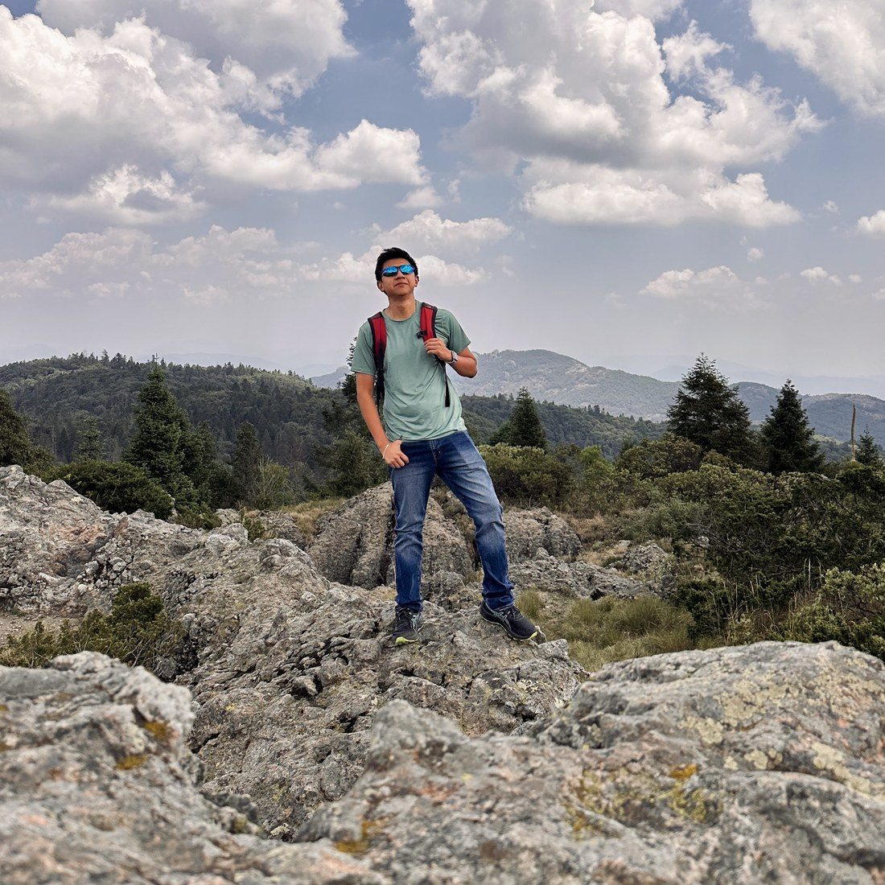
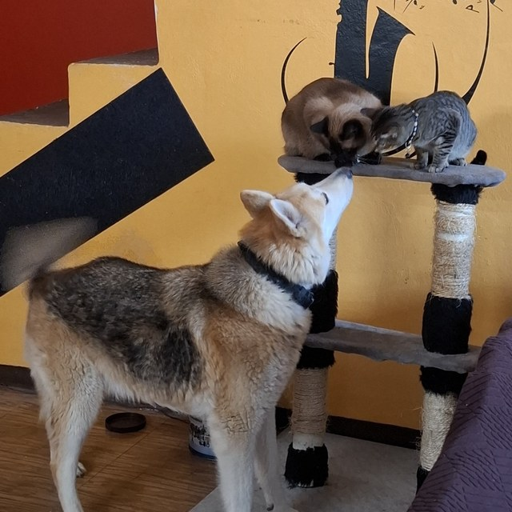
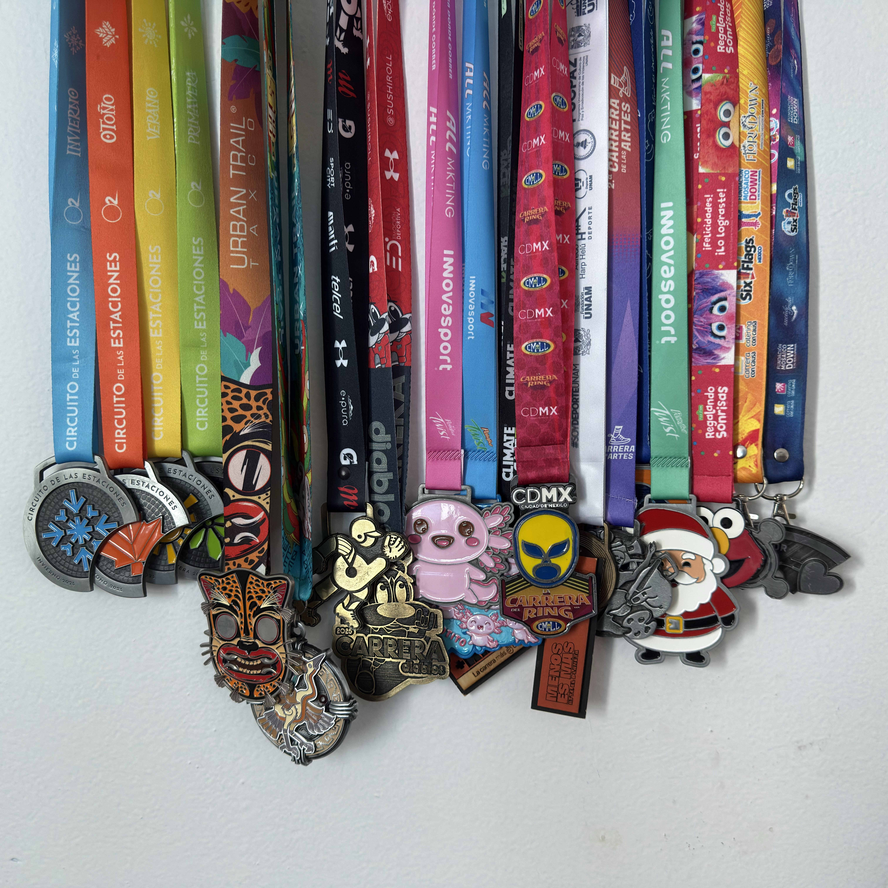
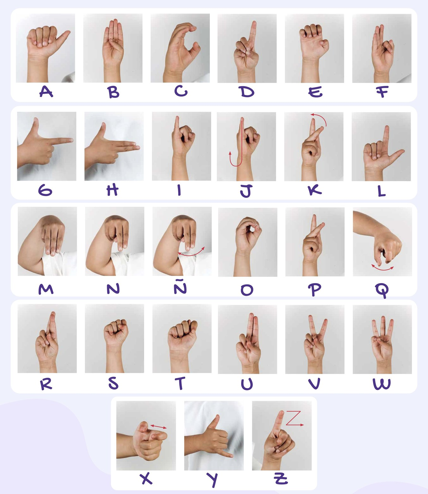
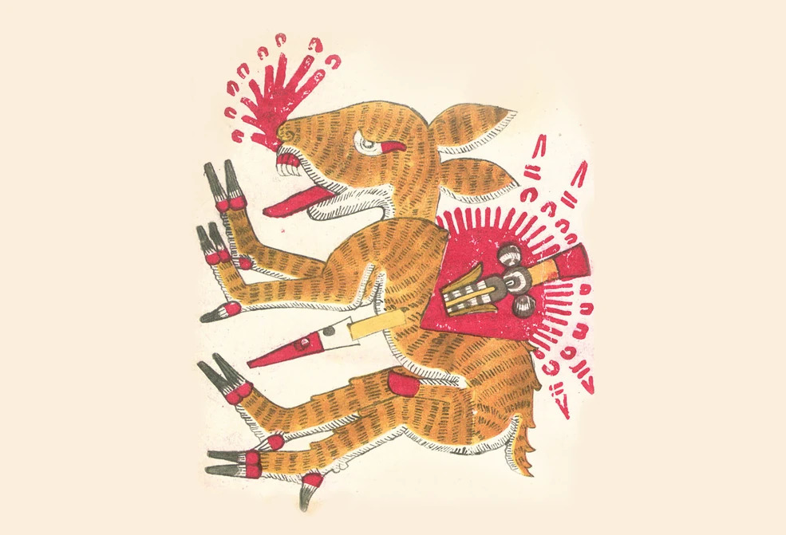
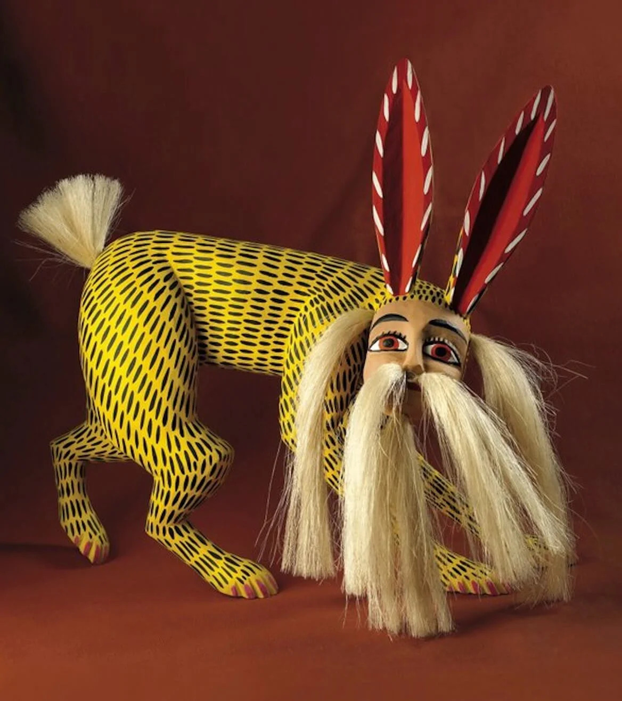
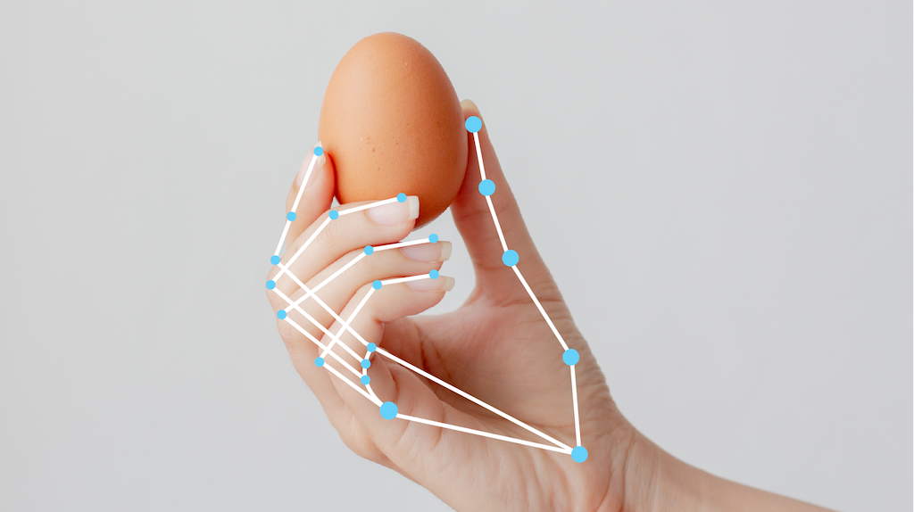

Nahual
Jorge Martinez.
Used to develop iOS apps, now eager to develop anything related to AI.
Cars-and-coffee guy, always up for a race, running or driving.



Accessibility
Voice assistants listen.
Captions transcribe.
Dictation types.
How Nahual Was Created
Started from a 1:1 with my manager, Pau Rico. She was learning LSM (Lengua de Señas Mexicana / Mexican Sign Language), and I'd always been curious about learning it too, somewhere in that conversation the idea clicked:
Could a machine actually recognize the gestures for a sign language?
And I took that personally.

How Nahual Was Created
A Nahual, a figure from Mesoamerican folklore, a shapeshifter entity to transform and shift between forms.
Fitting, since the whole job of this tool is translating one form of expression (hand shape and motion) into another (letters and text).


Static and Dynamic Gestures
Not every letter in the LSM alphabet behaves the same way.
Static
Most letters are a held pose. Show the hand, hold it, that's the letter.
Dynamic
A handful only make sense as movement.
This split is why there end up being two separate models later, not one classifier stretched to cover both.
Computer Vision · Hand Detection
Before anything gets classified, the system has to see a hand.

MediaPipe's HandLandmarker does the detection. The exact same settings run when collecting training data and when recognizing live, so the model never sees a different kind of input.
Machine Learning · Decision Trees
Before the forest, a single tree: one yes/no question at a time, until it lands on a letter.
Built during training: thousands of possible questions tried, keeping whichever split separates the letters best. But a single tree only memorizes. Show it 200 photos of one hand, and it fails on someone else's.
Machine Learning · Random Forest
Fix it with many trees, each judging on a random slice of the data.
Two models, not one, matching the split from earlier: one for static poses, one for dynamic motion.
Heuristics: Landmarks Into Features
Random Forest doesn't read raw points. It needs meaningful features.
Static poses
Dynamic motion
The same feature-extraction code runs during data collection and during live use, so training and live recognition always speak the same language.
Capture, Training, and Live Demo
Collect, train, then watch it run live.
Step 1 · Collect
Label samples letter by letter with the interactive collector.
Step 2 · Train
Fit the static and dynamic classifiers from that dataset.
Step 3 · Recognize live
The same recognition, running in two places.
The demo is a live run of this pipeline: first the desktop app, then the same recognition from a link on the public website.
Capture, Training, and Live Demo
Four scripts, one package underneath.
main.py
Live demo
collect.py
Capture
train.py
Training
inspect_data.py
Dataset check
nahual/
Shared core · landmarks · features
· models
Every entry point runs the same landmark, feature, and model code, so what trains is exactly what recognizes.
Challenges Along the Way
The smooth demo took real debugging to get there.
Challenge 1 · Dialing in detection
Problem MediaPipe's detection, presence, and tracking confidences all interact. Too loose, the hand flickers and false-fires; too strict, it never appears. Finding one setup stable across lighting and hand positions took real iteration.
Fix Locked the balanced configuration into a single shared config, so every tool sees the exact same detection.
Challenge 2 · Lost hands in motion
Problem Even with detection stable, fast motion still dropped the hand mid-gesture, exactly when the dynamic letters need it most.
Fix Raised tracking sensitivity, interpolated the remaining gaps, then retrained the dynamic classifier on the cleaner motion data.
9 → 3 dropped frames per quick gesture
Challenge 3 · Worse on the web
Problem Hosted, the demo felt worse than local. Latency starved the model of frames and eroded confidence below its threshold.
Fix Instead of patching the network, moved recognition fully into the browser. No round trip per frame, and it predicts bit-identical to the desktop app.
Two problems in the hand detection itself, one in how it was served. Sometimes you tune the settings, sometimes you rethink the whole architecture.
Built with Claude
Claude helped design the machine learning and build the real-time engineering.
Started as · Vibe coding
Conversational prompts, Claude writing the code, fast to a working prototype. Loose and unstructured.
Grew into · Spec-driven development
And the project doubled as where I learned to work with it, from a quick prototype to a disciplined, spec-driven workflow.
Current Limitations and Roadmap
Honest about where it is today, and where it goes next.
Today · Where it stands
Next · The roadmap
The biggest gains now come from more signers and more data, not more code.
Call to Action
Try it yourself, right now.
Three things I’d ask
Now you can carry one in your pocket.
Q&A
What would you like to know?
Your questions first. A few I hear often are queued up too.
Could this work for other sign languages, like ASL?
The pipeline generalizes. Only the labels and training data are LSM-specific, so ASL needs its own dataset and a retrain, not a rewrite.
Is my camera feed private?
Yes. MediaPipe and both classifiers run in your browser. No video and no landmarks ever leave your device.
Why Random Forest instead of a neural network?
Strong accuracy on a small dataset, no GPU, and quick to retrain as data grows. A neural network would want far more data than collected so far.
Is it overfitted to your hand?
A fair worry. Closed testing with several different users still recognized the gestures across different hand sizes and shapes.
What happens if the hand is lost mid-gesture?
A short grace period tolerates a few missing frames, and any gap gets interpolated, so a brief dropout does not kill recognition.
Thank you.
“Alone we can do so little; together we can do so much.” Helen Keller